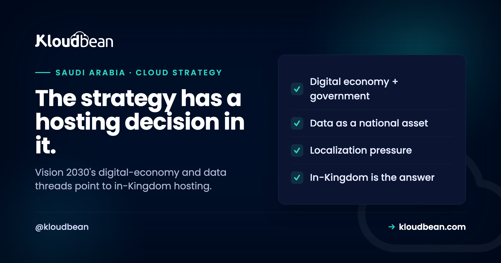

Saudi Vision 2030 and the Cloud: What It Means for Where You Host

Vision 2030 is usually discussed in big-picture terms: economic diversification, a digital economy, a country modernising at speed. But underneath the strategy sits a very practical question for anyone who builds or runs software for the Saudi market: where does your data live, and who governs it? The digital-transformation and data-localization threads of Vision 2030 have made "in the Kingdom" a common answer, and increasingly a required one for regulated and government-facing systems. This guide connects the strategy to the infrastructure decision it implies, without the buzzwords, so you can see why in-Kingdom hosting keeps coming up.
Vision 2030 drives Saudi Arabia toward a diversified, digital economy, and a consistent thread within it is treating data as a national asset: a push toward digital government, a growing digital sector, and data governance that favours keeping sensitive data inside the Kingdom. Practically, that means organisations serving the Saudi market increasingly need in-Kingdom hosting, with data residency, alignment to the PDPL privacy law, and the NCA's cybersecurity controls. It does not mean every workload must be in-Kingdom, but for regulated, government-facing, and personal-data-heavy systems it is often expected. In hosting terms the answer is a Saudi region, managed databases that keep data in-Kingdom, and infrastructure aligned with the national frameworks, which is exactly what running on the Dammam region provides.
What Vision 2030 is, in one paragraph
You do not need the whole policy document to understand the hosting implication, just the direction of travel.
Vision 2030 is Saudi Arabia's national transformation programme, aimed at diversifying the economy beyond oil, growing the private sector, and modernising public services. Technology and data run through much of it: a larger digital economy, more digital government services, and a general treatment of data and digital infrastructure as strategic national assets rather than incidental IT. For a hosting conversation, the specific number targets matter less than that direction, because the direction is what shapes regulation and procurement. When a country decides its digital sector and its data are strategic, the rules and expectations around where that data sits tend to follow, and they have.
The data and cloud thread
Within that broad programme, a few concrete threads bear directly on hosting, and they reinforce each other.
There is a strong move toward digital government, with public services delivered online, which raises the bar for how the systems behind them are hosted and secured. There is deliberate growth of the digital economy and a local technology sector, which brings more data-handling businesses under Saudi regulation. And there is a clear emphasis on data governance: bodies such as SDAIA, the Saudi Data and Artificial Intelligence Authority, and the National Data Management Office set the direction for how data is handled, while the National Cybersecurity Authority (NCA) sets the security controls. The common thread across all of these is that data, especially personal and government data, is expected to be handled to a national standard and, for sensitive categories, kept inside the Kingdom. That is the point where national strategy becomes a line item in your architecture.
Why data localization became central
Three forces, all pointing the same way, are why "keep it in the Kingdom" stopped being optional for a lot of workloads.
The first is sovereignty: a strategic view that data generated in Saudi Arabia, particularly government and citizen data, should be governed by Saudi law and not casually exposed to foreign jurisdiction. The second is privacy law: the Personal Data Protection Law (PDPL) sets obligations around personal data, including expectations that push sensitive data toward staying in-Kingdom. The third is cybersecurity regulation: the NCA's Essential and Critical Systems Cybersecurity Controls set the security bar, and for critical systems they explicitly favour in-Kingdom hosting and Saudi-based operations. None of these is a marketing slogan; they are the actual reasons a Saudi bank, ministry, or regulated business ends up requiring in-Kingdom infrastructure. Vision 2030 is the strategic umbrella, and these frameworks are how it reaches your architecture diagram.
What this means for where you host
Translated into decisions, the implication is refreshingly concrete, which is the useful part.
If you serve the Saudi market with anything involving personal or regulated data, the safe default is to host in-Kingdom: run your servers and, crucially, your databases in a Saudi region, keep the backups there too, and align the infrastructure with PDPL and the NCA controls. The database matters most, because that is where the regulated data actually lives, so managed databases that stay in-Kingdom are the heart of it, as covered in managed databases with Saudi data sovereignty. This is not a claim that every workload must be localized, a purely internal tool or a non-personal-data service may not need it, but for the systems Vision 2030's regulatory direction is aimed at, in-Kingdom is the expected answer. The mechanics of doing it are in cloud hosting in Saudi Arabia and data residency in Saudi Arabia.
In practice that is a provisioning choice rather than an architecture project. On Kloudbean you pick Google Cloud's Dammam region, me-central2, when you create the server and the managed database, and the automatic backups stay in the same region. Free SSL comes with it, and on a standard plan the database is locked down by whitelisting your app server's IP so only that server can connect. The reason to decide it at provisioning time is simple: choosing the region costs nothing today, and moving a populated database between regions later costs a cutover window.
Who this actually affects
It is worth being specific about who needs to act on this, because it is not literally everyone.
Government and public-sector systems are the clearest case, since digital government is central to the strategy and these systems carry the strongest expectations. Regulated industries, finance, healthcare, telecoms, follow closely, because they handle sensitive data under sectoral rules on top of the national frameworks. Any private company handling significant personal data of Saudi residents falls under PDPL and should treat residency seriously. And critical national systems fall under the NCA's Critical Systems Cybersecurity Controls, the strictest tier, covered in the NCA CSCC guide. If you are a small business with no personal data and no government exposure, the pressure is lighter. The honest read: the more sensitive your data and the closer to government or a regulated sector you are, the more Vision 2030's direction turns into a firm hosting requirement rather than a nice-to-have.
The tiers also imply different shapes of engagement. A private company with personal data can meet the residency part on a self-serve plan by choosing the region and locking down access. A critical or government-facing system needs the fuller control set (segmented networks, privileged access through VPN and a bastion with MFA, centralised logging with long retention, tested multi-zone recovery), and that is delivered as a managed engagement on a dedicated cloud account, not as switches on an $8 plan. Kloudbean does both, and it is worth knowing which one your tier actually calls for before you budget.
Five things teams get wrong about localisation
Most of the wasted effort in this area comes from a handful of confident assumptions. Each one below has cost somebody a delayed tender or a surprise finding, so check your own plan against them.
Myth: in-Kingdom means a Saudi company owns the data centre. It means the region your workload physically runs in. Kloudbean is not a data centre operator; it manages your workload on hyperscaler infrastructure, and the in-Kingdom option here is Google Cloud's Dammam region, me-central2. Separately, the frameworks do carry expectations about Saudi companies providing managed services for critical systems, which is a procurement question about your suppliers rather than a claim any provider should make loosely.
Myth: the app is in Dammam, so we are localised. The app server is rarely where the regulated data sits. Check the database, its backups, object storage, your logging and observability pipeline, any queue or cache, and every third-party API you call. Backups in another region is the classic finding. An analytics or error-tracking tool quietly shipping request bodies abroad is the sneaky one.
Myth: localisation equals compliance. Residency is one control among many. It does nothing for your governance, your risk register, your retention schedule, your data-controller obligations under PDPL, or the training your staff have not had. No host fixes any of that, ours included. Kloudbean is compliant-ready and aligned with the frameworks, not certified, and no provider can hold a certification on your behalf. We also will not assert any cloud provider's certification status for you; confirm that with the provider and your assessor.
Myth: localising will slow us down or cost us features. For users inside the Kingdom, running in Dammam usually improves latency rather than harming it. The real trade is service and version availability by region: an extension like pgvector depends on the Postgres version you choose, and specific GPU or premium options vary by cloud and region. Confirm the pieces your stack actually needs in that region before you commit to a date.
Myth: we will move when a tender asks for it. Tenders arrive with deadlines, and a region change is a data migration, an integration re-test, and a fresh round of evidence. Picking the region at provisioning time is free. Free migration assistance is available for servers above 4GB if you are already elsewhere, and a 3-day trial on one service lets you prove the app runs in-region before you commit traffic.
Where that leaves the split: infrastructure alignment, residency, technical controls, and evidence sit with the platform, on a self-serve plan for the residency basics and on a managed engagement for the fuller control set. Governance, PDPL controller duties, application-layer work, and the formal assessment stay with your organisation. Strategy sets the direction, and the region dropdown is where you act on it.
If saudi Vision 2030 and the Cloud was the symptom, not the cause
Start with cloud hosting in Saudi Arabia for the how, and data residency in Saudi Arabia for the residency mechanics. The database heart of it is managed databases with Saudi data sovereignty. For the frameworks, PDPL-compliant hosting and the NCA CSCC guide, and for the region itself, the GCP Dammam region guide.
Host to match the national direction.
Run your servers, managed databases, and backups in-Kingdom on the Dammam region, aligned with PDPL and the NCA controls, from one dashboard. Start at kloudbean.com, and see how the pieces fit in cloud hosting in Saudi Arabia.
In-Kingdom Dammam region · Managed databases · PDPL and NCA aligned · One dashboard
FAQ
What is Saudi Vision 2030 in relation to technology?
Vision 2030 is Saudi Arabia's national transformation programme to diversify the economy and modernise public services, and technology runs through much of it: a larger digital economy, more digital government services, and treating data and digital infrastructure as strategic national assets. For hosting, the important part is the direction, once data is treated as strategic, the regulations and expectations around where and how it is stored tend to follow, which is what shapes hosting decisions.
Does Vision 2030 require me to host in Saudi Arabia?
Not universally, but for a growing set of workloads it effectively does. The strategy's data-governance direction, expressed through the PDPL privacy law and the NCA cybersecurity controls, pushes sensitive, personal, and government-related data toward staying in-Kingdom. A purely internal tool with no personal data may not need localization, but regulated, government-facing, and personal-data-heavy systems increasingly require it. The safest read is that the more sensitive your data, the more in-Kingdom hosting becomes an expectation rather than an option.
What is the connection between Vision 2030 and data localization?
Data localization is one practical expression of Vision 2030's treatment of data as a national asset. Keeping sensitive data inside the Kingdom supports sovereignty, aligns with the PDPL privacy law, and satisfies the NCA controls that favour in-Kingdom hosting for critical systems. So while Vision 2030 is a broad strategy, one of the concrete ways it reaches your infrastructure is through the expectation, and in many cases requirement, that regulated data resides in Saudi Arabia.
Which organisations are most affected?
Government and public-sector systems most of all, since digital government is central to the strategy. Regulated industries like finance, healthcare, and telecoms follow closely because they handle sensitive data under sectoral rules. Private companies handling significant personal data of Saudi residents fall under PDPL, and critical national systems fall under the strictest NCA tier. Small businesses with no personal data or government exposure feel far less pressure, so the impact scales with data sensitivity and proximity to government or regulated sectors.
What are SDAIA and the NCA?
SDAIA, the Saudi Data and Artificial Intelligence Authority, and bodies like the National Data Management Office set the national direction for how data is governed and managed. The National Cybersecurity Authority (NCA) sets the cybersecurity control frameworks, including the Essential Cybersecurity Controls and the Critical Systems Cybersecurity Controls. Together they translate the strategic emphasis on data into concrete data-handling and security expectations, which is what a hosting setup has to align with in practice.
Does hosting in-Kingdom make me compliant with the frameworks?
No. In-Kingdom hosting supports compliance and aligns with the frameworks, but compliance is assessed against your whole organisation, including how you handle data, your governance, and your processes. The infrastructure provides residency, technical controls, and evidence, which is a significant part of the picture, but the data-controller obligations under PDPL and the organisational controls remain yours. Any provider claiming their hosting alone makes you compliant or certified is overstating what infrastructure can do.
How does a managed cloud help meet these expectations?
A managed cloud lets you satisfy the infrastructure side of the requirements without building it by hand: servers and managed databases provisioned in a Saudi region so data stays in-Kingdom, backups kept in-Kingdom, encryption and network isolation, and, on managed engagements, the logging and access controls the frameworks describe. That turns the strategic requirement to keep data in the Kingdom and handle it to standard into a running setup, while your organisation focuses on the governance and application-layer obligations only it can own.
Where should I start if I need in-Kingdom hosting?
Begin with the database, because that is where regulated data lives, and make sure it is a managed database running in a Saudi region with in-Kingdom backups. Then confirm your servers and any object storage are in the same region, add SSL and access controls, and map your setup to PDPL and the relevant NCA controls. Provisioning on the Dammam region and using managed databases handles the residency foundation, after which the remaining work is governance and application-level obligations.